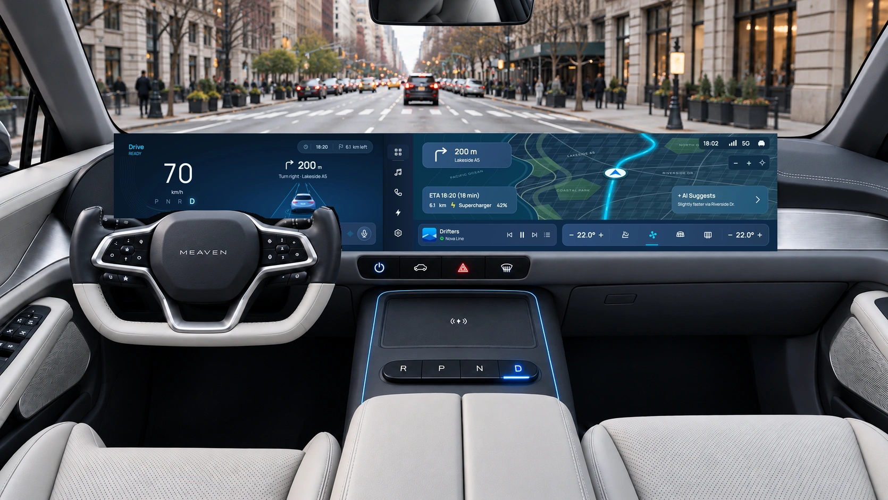
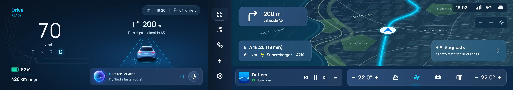
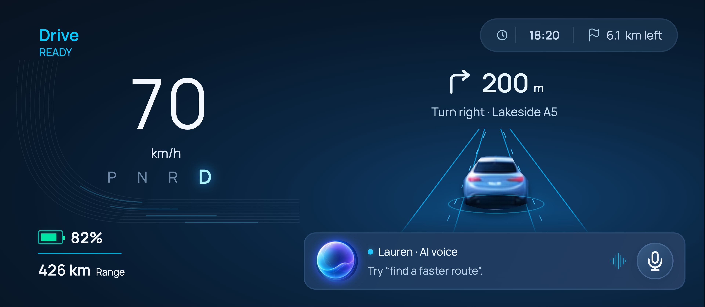
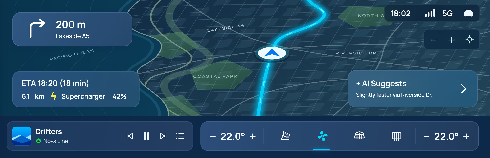
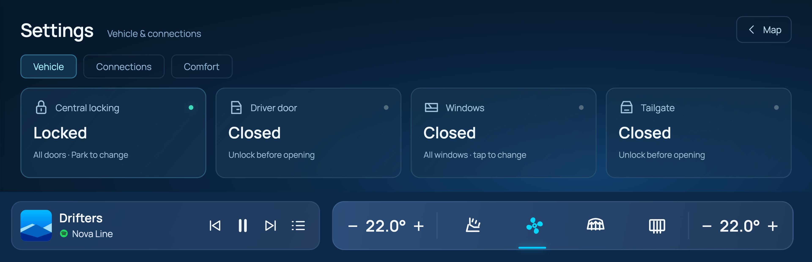
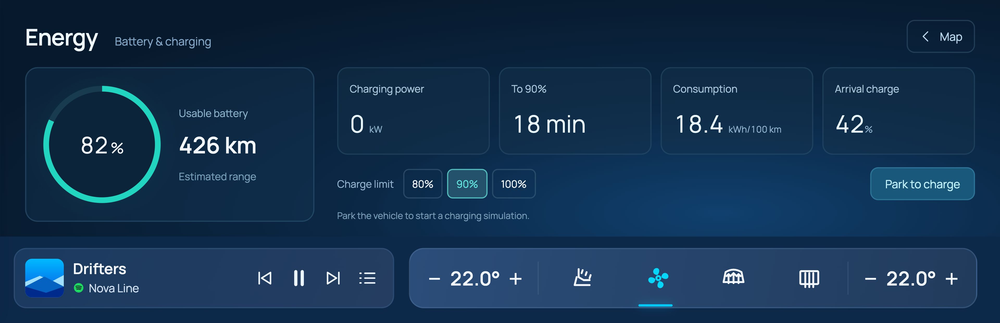
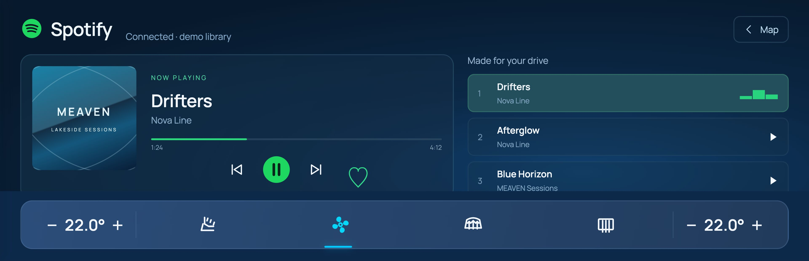

Keep the essentials together.
Speed, gear, battery and the next turn stay in one driver zone.
A concept for a modern, AI-assisted car dashboard. I designed the layout, controls and companion-app direction, then built a working prototype to explore the interactions.
Product thinking · UX/UI · Interaction design

A large screen can show almost anything. I focused on keeping driving information visible and making everyday controls easy to find again.
Speed, gear, battery and the next turn stay in one driver zone.
A fixed app rail opens the map, music, energy and settings in the same workspace.
Lauren can suggest a route. The driver approves the change before it is applied.
My role: layout and interaction design, visual direction, design-system choices and repeated review. AI helped with concept imagery, exploration and implementation.
The brief began as a wide, premium EV cockpit with navigation, vehicle controls and an AI assistant. The harder question was how those parts should work together when someone is trying to get somewhere.
While driving: keep speed, the next turn and vehicle state easy to locate. An app should not replace the information needed to continue the journey.
While parked: give vehicle settings and charging choices enough room to be understood. The prototype makes parked-only actions explicit.
Before getting in: let the proposed companion app prepare the route and cabin. It should use the same names and states as the cockpit.
Working assumption: a driver moves between brief checks and deliberate tasks. These contexts shaped the concept; they are not findings from observed driving sessions.
I combined a review of official car-interface documentation with task assumptions and feedback from the project reviews. The tabs below separate open questions, review observations and work still to be tested.
I reviewed official product documentation for three different approaches. This comparison informed the expanded case study; it does not mean MEAVEN has been tested against these vehicles.
The manual describes persistent status and bottom bars, a map with widgets, and separate climate and settings views.
MEAVEN question: can the app area change while navigation and comfort controls remain predictable?
Source: center display manual ↗The manual documents a steering-wheel microphone entry point and voice commands for climate, navigation, media and supported vehicle functions.
MEAVEN question: is it obvious when Lauren can be invoked and what happens after a request?
Source: voice-command manual ↗Porsche’s March 2025 PCM update describes an App Center with Porsche and third-party apps, alongside digital voice assistants.
MEAVEN question: how can music feel familiar while vehicle controls still belong to one system?
Source: PCM product update ↗Desk review updated November 2026. Diagrams above illustrate the patterns discussed; they are not screenshots or reproductions of the brands’ interfaces.
These examples suggest that large displays need clear boundaries as well as useful features. For MEAVEN, I chose a stable driver zone, one app workspace and a visible voice entry point. Those are design hypotheses to evaluate, not proof of better driving performance.
The next turn, speed and vehicle state should remain in place when an app opens.
Navigation, music and cabin controls need recognizable labels, icons and a consistent location.
A suggestion should explain the proposed change and leave the driver a clear choice.
Review feedback highlighted distant controls and competing widgets. I grouped the driving information and kept one app area.
Settings and charging moved into dedicated pages. The driver zone stays visible alongside them.
Turn distance, arrival time and remaining distance now update together. Repeated widgets and inconsistent states were removed.
Can people open A/C, adjust it and return to the map without help? Observe hesitation and recovery.
Can they explain what Lauren is proposing and tell whether the route has changed?
Review legibility, reach and touch targets on representative hardware before drawing conclusions about in-car use.
The research questions became a simple layout rule: changing an app should not make the driver search for the next turn, speed or battery state.
Speed · gear · next turn
Battery · range · Lauren
Recognizable destinations
A consistent return to the map
Navigation · media · phone
Energy · vehicle settings
Keep frequently checked information in fixed places. Give detailed tasks full pages. Keep media and A/C available near the workspace rather than scattering more cards across the dashboard.
The browser canvas does not establish real-world reach, glance time or safe target sizes. Physical controls, display position and hardware constraints would need to be reviewed with automotive specialists.
Alex is a fictional driver used to check the flow. The goal is to move between driving information, app controls and route suggestions without losing context.
The wordmark and chime introduce the system before the home screen appears.
Speed, gear, battery and guidance are grouped in front of the driver.
Change a setting or use media while the driver display remains in place.
Apply the suggestion or keep the current route, then continue.
Both guidance views stay in sync as the simulated journey progresses. Remaining distance changes from 6.2 to 6.1 km, with the arrival estimate updating alongside it.
I grouped the driving information first, then worked through how navigation and app pages should use the remaining space. These drawings reconstruct the layout decisions from the project reviews.
The early concept gave navigation, media, climate and the assistant their own spaces. Reviews showed that the result was too spread out and the hierarchy was unclear.
I brought the next turn above the car, kept speed and battery on the left, removed duplicate assistant entry points and gave the app rail a fixed position.
Settings, charging and media needed more room. Dedicated pages replaced floating panels, while the driver display and everyday controls remained available.
Keep the next action visible.
Group related information.
Remove overlap and unclear states.
A small set of shared choices keeps the screens consistent. Manrope supports the interface; the portfolio presentation uses Neue Montreal and handwritten notes.
The early light-first direction helped establish a calm hierarchy. Later reviews moved the cockpit toward dark blue, brighter guidance and a more expressive assistant. I kept the hierarchy and changed the surface treatment.
Cyan highlights active guidance and interaction. Teal supports energy state. Color does not carry meaning alone: labels, grouping and visible states explain what a control does.
The written MEAVEN identity follows the supplied wordmark. Lauren uses an abstract orb rather than a human portrait, keeping attention on the request and response.
4 / 8 / 12 / 16 / 24 / 32 spacing, consistent card padding and a near-borderless display.
Labels work alongside color. Selected, unavailable and parked-only states remain explicit.
Keyboard focus, optional voice, reduced motion and a 100% review view support the browser prototype.
The finished concept uses the same layout and components across navigation, voice assistance and app pages. These images come from the working prototype.
The next turn sits above the car. Speed and battery stay on the left, with Lauren close by.

Arrival, distance and charging context sit on the map. Music and A/C stay along the bottom.

Tap the microphone to start a supported voice task. Review a route suggestion before choosing to apply it.
The prototype uses scripted responses and optional neural voice clips.

Related controls are grouped in labeled cards. Parked-only actions are shown as unavailable while driving.

Battery state, estimated range and charge limits have a dedicated page.

A familiar playback layout and queue, with a simulated provider connection.
Check the vehicle, prepare a route or set cabin comfort from your phone. These are visual direction studies, separate from the implemented cockpit prototype.
The prototype turns the layouts into connected states. It is a way to inspect the design and reveal gaps that static screens can hide.
The artwork extends beyond the viewport. Journey distance and arrival estimates update together.
Labels show locked, closed and unavailable states. Parked-only actions are gated in the simulation.
A visible microphone starts the interaction. A recommendation does not silently replace the route.
Implemented: navigation panning and zooming, app switching, simulated vehicle states, media controls and supported Lauren responses. Proposed: companion-app direction. Not connected: a real vehicle, a live music account or an open-ended AI service.
Try the map, app pages and Lauren interactions. The next step is task-based evaluation: can people find a control, understand a suggestion and return to navigation without help?
Observe where people look, whether they find the right control and how they recover from a wrong choice.
Ask what will change, whether it has already changed and how to keep the current route.
Check whether people can still locate the next turn and battery state without relearning the layout.
Independent concept. Vehicle actions, media connections and journey estimates are simulated. The interior is a generated concept visualization. No completed user-study outcomes or automotive safety validation are claimed.